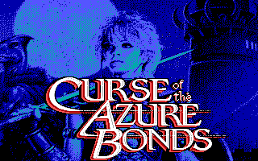
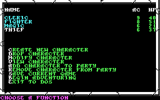
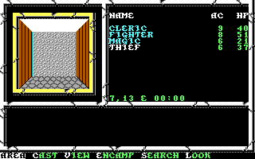
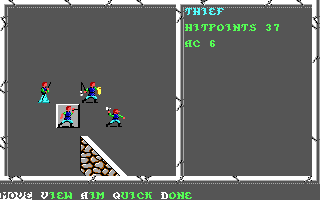

名稱：青色枷詛咒／蔚藍之縛的詛咒 (Curse of the Azure Bonds，英文版)
簡介：SSI 1989年出品的角色扮演遊戲，為光芒之池系列的第二部，台灣由智冠代理進口。
遊戲以直角3D畫面呈現，戰鬥時則以3D斜角畫面呈現，採策略團體回合制方式進行 [待補]。




備註：本版為1992年1.3版
保護：輪盤單字，破解碼：
GAME.OVR
74 1C 8D 7E
EB -- -- --
檔案：curse10.rar = 1.0版（智冠版）
操作：Home/End = 上下移動選單